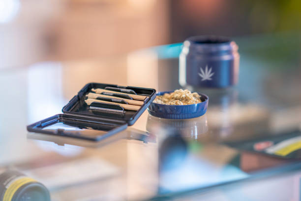

The importance of social media marketing for dispensaries
Posted by on 2024-06-10
In today's digital age, social media has become an essential tool for businesses to connect with their customers and promote their products or services. This is especially true for dispensaries in the growing cannabis industry, where having a strong online presence can make all the difference in attracting new customers and building brand loyalty.
One of the key reasons why social media marketing is so important for dispensaries is its ability to reach a wide audience quickly and cost-effectively. Platforms like Instagram, Facebook, and Twitter allow dispensaries to showcase their products, share educational content about cannabis, and engage with customers in real-time. With just a few clicks, dispensaries can reach thousands of potential customers who may be interested in what they have to offer.
Social media also allows dispensaries to build relationships with their customers by responding to comments and messages promptly and providing valuable information about their products. By engaging with customers on social media, dispensaries can create a sense of community around their brand and establish themselves as a trusted source of information in the cannabis industry.
Furthermore, social media marketing can help dispensaries increase brand awareness and drive traffic to their physical locations or online stores. By creating compelling content that resonates with their target audience, dispensaries can attract new followers who may eventually become loyal customers. Social media also provides valuable insights into customer preferences and behavior, allowing dispensaries to tailor their marketing strategies accordingly.
Overall, the importance of social media marketing for dispensaries cannot be overstated. In an increasingly competitive market, having a strong presence on platforms like Instagram and Facebook can give dispensaries a significant edge over their competitors. By leveraging the power of social media to connect with customers, build relationships, and drive sales, dispensaries can position themselves for long-term success in the rapidly evolving cannabis industry.